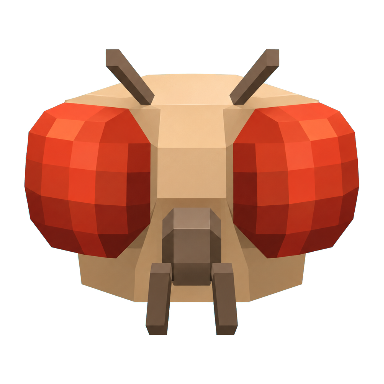

ALL SOMATADRAG TO ROTATE / WHEEL TO ZOOM
VISIBLE RECORDS--
SWC SEGMENTS--
COORDINATE SPACEMALECNS EM

OMMARAMEASURED ANATOMY / NO DEMO TELEMETRY
140,024 measured male soma positions, four official SWC neuron skeletons, and 3,761,792 matched male/female type-level edges.
pC1 cluster crossed threshold
receptivity response increased
cVA stimulus stabilized at 0.42
WHAT IT IS
A controlled encounter between two biological wiring diagrams.
Ommara places male and female Drosophila connectomes under the same sensory conditions. Each trial sends an identical encoded signal into mapped sensory populations, propagates activity through a connectome-constrained model, and compares downstream behavioural circuits.
The project asks a narrow question: when anatomy differs by sex, how does the same input travel differently? Courtship is the interface because it exposes a dense intersection of vision, smell, sound, internal state and action.
SEXUAL DIMORPHISM
The comparison is now possible at synaptic resolution.
Matched cell types with corresponding structure in both connectomes.
Related cell types with sex-dependent anatomy or connectivity.
Types identified only in the male reference connectome.
Types identified only in the female reference connectome.
Sex-specific neurons are enriched in higher brain centres, while much of the sensory and motor periphery remains structurally comparable. This makes paired input experiments possible without claiming that the two datasets are interchangeable.
EXPERIMENT PROTOCOL
One variable changes. Everything else stays fixed.
Pheromone, target motion or courtship song is encoded for known sensory populations.
Both models receive matched onset time, intensity and duration.
Spikes travel through fixed anatomical connections; neurotransmitter identity supplies the sign.
Mapped courtship, receptivity, rejection and descending-neuron groups are measured.
Seeds and conditions are recorded so every comparison can be reproduced.
COMPUTATIONAL METHOD
A thin simulation layer over measured anatomy.
dv/dt = (v_rest - v + g) / tau_m
dg/dt = -g / tau_syn
spike if v > v_threshold
g += contacts * transmitter_sign * w_synOPEN SOURCE
Every external component is named and inspectable.
Complete male brain and ventral nerve cord; neuron, synapse and annotation downloads.
Versioned cell-type, neurotransmitter and sexual-dimorphism annotations.
Reference implementation of the connectome-constrained LIF brain model.
Biomechanical Drosophila body and physics simulation for future embodiment.
WHAT IS NOT REAL
The boundary is part of the experiment.
THIS IS NOT A MIND UPLOAD. A connectome records anatomical connectivity. It does not preserve the individual flys memory, chemistry, development or subjective state.
NO ACTIVITY IS IMPLIED. Rotation, selection and highlighting are interface operations. They do not represent firing neurons.
RESPONSE IS NOT PREFERENCE. Activity in a courtship-related circuit would not mean that a digital fly feels attraction or makes a conscious choice.
NO SIMULATION HAS BEEN RUN HERE. This build displays measured anatomy and published type-level comparisons only. Behavioural predictions require a separately versioned model and output.
Measured structure first. Model claims only after reproducible output.